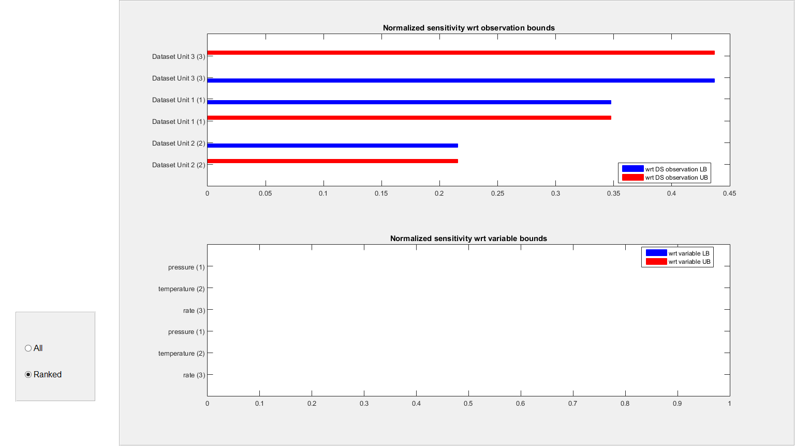
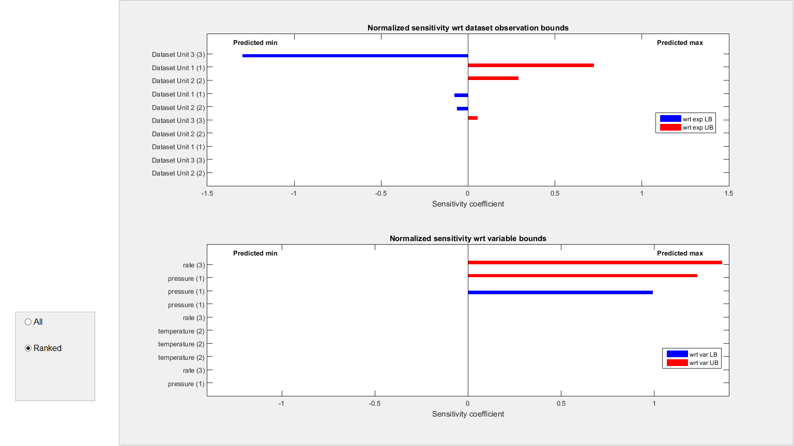

Introduction
In this tutorial we demonstrate how to use generateDataset function to generate B2BDC.B2Bdataset.Dataset object and what inputs are required for the function. Some simple examples about the functionality of B2BDC.B2Bdataset.Dataset object is also included.
Contents
Create a dataset
To generate a dataset user needs a name for the dataset
% create a string that defines the name of the dataset dsName = 'Example Dataset'; % create a dataset object ds = generateDataset(dsName);
Add dataset units into the dataset
More detail information can be found in generateDatasetUnit demo
% create a VariableList varName = {'pressure','temperature','rate'}; H = repmat([-1,1],3,1); varVal = zeros(3,1); varList = generateVar(varName,H,varVal); % create 3 dataset units and add it to the dataset nUnit = 3; nVar = size(H,1); for i = 1:nUnit dsUnitName = ['Dataset Unit ' num2str(i)]; coefMatrix = rand(nVar+1); coefMatrix = coefMatrix+coefMatrix'; Qmodel = generateModel(coefMatrix,varList); QoIBD = [-0.2-0.1*(rand(1)-0.5), 1+0.1*(rand(1)-0.5)]; dsUnit = generateDSunit(dsUnitName,Qmodel,QoIBD); % add dataset unit ds.addDSunit(dsUnit); end
Calculate the consistency measure
This will returns a logical result and also update the ConsistencyMeasure and ConsistencySensitivity property of the dataset object. The value updated in the property is an interval that contains the real consistency measure value.If the lower bound of this interval is positive, then the dataset is consistent and the return logical value is true. If the upper bound of this interval is negative, then the dataset is inconsistent and otherwise the dataset is undetermined. In both incosistent and undererminded case, the returned logical value is false.
y = ds.isConsistent; CM = ds.ConsistencyMeasure
=======================================================
Searching inner bound...
=======================================================
=======================================================
Calculating outer bound...
=======================================================
The calculation is done
Consistency LB: 1
Consistency UB: 1
The dataset is consistent
CM =
1 1
Consistency measure sensitivity plot
This plot shows the sensitivity of the outer bound of consistency measure with respect to the bounds of QoIs and variables.
ds.plotConsistencySensitivity;
Clear the consistency measure
You can also clear the consistency measure of the dataset
ds.clearConsis;
Make prediction on another model
When the dataset is consistent, we can add another model as a QoI that wants to be predicted. The function will update the QOIRange and QOISensitivity property of the dataset object.
% make a model for prediction coefMatrix = rand(nVar+1); coefMatrix = coefMatrix+coefMatrix'; Qmodel = generateModel(coefMatrix,varList); % make QOI prediction [QOIRange, ~, QOISensitivity] = ds.predictQOI(Qmodel);
======================================================= Searching inner bound... ======================================================= ======================================================= Calculating outer bound... ======================================================= The calculation is done Consistency LB: 1 Consistency UB: 1 The dataset is consistent ======================================================= Searching inner bound... ======================================================= ======================================================= Calculating outer bound... ======================================================= The calculation is done Minimum value of QOI is within: [-0.78192 -0.77059] Maximum value of QOI is within: [0.12289 1.1125]
QOI prediction sensitivity plot
This plot shows the sensitivity of the outer bound of QOI prediction with respect to the bounds of QoIs and variables.
ds.plotQOISensitivity(QOISensitivity);